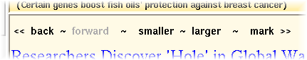
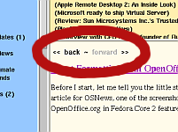

Emoji characters in story titles and descriptions are replaced with a “◽” character because Tcl is unable to render them.
NewsFeed now runs on Python 3.3 exclusively; Python 2.x is no longer supported by the latest version. (NewsFeed 2.16 is still available for Python 2 users.)
If you are upgrading from NewsFeed 2.x, it is recommended to back up your .newsfeed subscriptions file first. (Or at least run feed2opml.py to export your subscriptions list.)
Support for playing audio notifications via PyAudio and command line audio players has been added. Previously, this feature was TkSnack-only.
Upgraded to Feedparser 5.1.2, converted README to Markdown, improve searches, especially a long-standing bug where "Next Unread" would jump to the middle of a search feed instead of the beginning.
Added manual offline mode from v2.14 to the single-process version too.
Fixed some minor annoyances related to feed auto-discovery that were due to the new multiprocessing setup. Also, this update to 2.14 should work on Windows again. If you are using yesterday's version, you may want to download the update (same filename as before). Just compare the MD5 checksum for the archive file if you are in doubt which version you have.
Downloading and parsing of feeds is now done by child processes, improving GUI performance during updates. This uses Python's new multiprocessing module, so Python 2.6 or later is required.
This release also introduces toggling offline mode manually with o to suppress automatic updates, a feature suggested on the Freshmeat project page. Note that you can still update manually when this offline mode is enabled.
Features a new widescreen view (toggled with keyboard shortcut w) à la NetNewsWire.
Upgraded to the latest version of FeedParser (4.1) to address problems with certain Atom feeds.
This release features significantly better performance for searches, as well as highlighting of the search terms in the results.
Added a command line option for the console interface (--nogui) and some other minor improvements.
A problem related to Unicode characters in certain feeds was fixed.
This release fixes a problem with HTML rendering and adds another utility, bsize.py, which prints the size (in bytes) each feed occupies in the NewsFeed cache.
The default font sizes are now defined at the beginning of newsfeed.py, to make changing them easier.
Some minor enhancements (for example for dealing with feeds that have HTML in their titles or no titles at all) and the removal of a bug where dinos.py would crash if there was an empty feed in the list.
NewsFeed can now also watch regular web pages for changes. This works by simply entering the URL of the page into the "RSS:" field in the Subscription Info box. The page is downloaded regularly and if new content appears, a new item with the additional content is generated. This works best for pages with relatively simple HTML markup and is only recommended for sites without RSS feeds, as the bandwidth usage is a lot higher than that of a regular RSS subscription.
There are also two new helper scripts, export_flagged.py and export_unread.py that export flagged or unread items to an HTML page (written to standard output).
An issue with v2.6.0 was discovered: My sample newsfeed_defaults.py was included even though it should not have been, which caused problems. Fix: Either comment out the definitions in newsfeed_defaults.py or download the new version of NewsFeed without that file.
This release introduces an optional new extra configuration file, which among other things is useful for installing NewsFeed onto a USB flash drive.
This release fixes a problem with HTML bullet entities (•).
NewsFeed now features a button to open the Talk Digger page for an item, right next to the export button. As Talk Digger is ad-supported, this new feature is optional and can easily be disabled in line 80 of newsfeed.py.
By popular demand: Custom refresh intervals, especially ones shorter than the previous minimum of five minutes. This is implemented as a new item in the refresh interval popup menu in the subscription info box, "Custom". The number of minutes this interval corresponds to is set on line 72 of newsfeed.py in the variable custom_interval. By default this is set to .333, i.e. about 20 seconds.
Support for Unicode characters specified as decimal character codes, such as —, which were previously simply replaced with ASCII characters, has been improved.
The is now an export button in the description pane, which can be used for things like printing the current item, creating a new email that includes the item title and description, or starting a new weblog post containing the item.
What program is called when export is pressed is configured in lines 55 to 62 in newsfeed.py, where the variable export_application is defined. Simple template substitution is used, where title is the story title and description_file is the path to a file containing the story as you see it in the description pane (minus the toolbar).
To deal with problems when Unicode characters are printed to the console, a new variable is introduced, console_encoding. The encoding specified here (e.g. "latin-1", "utf-8", etc.) is used when printing to the terminal or exporting items to an external program. Ideally, a correct encoding is already set for all Python programs in sys.getdefaultencoding(). However, this is often set to "ascii" even on systems that use "latin-1", so the encoding used by NewsFeed can be specified here separately, with "latin-1" being the default when there is not global setting other than "ascii".
Finally, dumpfeed.py is a new script for exporting all stories in a channel to standard output. For example, dumpfeed.py 'cnn top stories' does this for the feed which has a name matching the argument (match is not case-sensitive).
By popular demand, NewsFeed now pops up a confirmation dialog when you unsubscribe from a channel. Of course there is also a checkbox to deactivate this dialog for the current session. If you want to permanently disable it, set ask_before_deletion = False on line 60 of newsfeed.py.
Atom feeds are now supported, thanks to an upgrade of the included version of Mark Pilgrim's feed parser to v3.3.
The new feed parser returns content as unicode strings. Therefore, character encodings other than ASCII or Latin-1 should now be supported, e.g. feeds in Greek or feeds encoded in UTF-16 should work. Results may vary somewhat depending on the fonts installed on your system and your Tk version, which generally has to be 8.1 or above for Unicode support.
There are also three new environment variables, NEWSFEED_SOUND (sound file for alerts), BROWSER_NEW (should links be opened in a new browser window? — defaults to "yes"), and MEDIA_PLAYER (media player or download manager for handling enclosures) to control program behavior without changing the source code.
Enclosures are displayed as hyperlinks with information about their type and size. Left-clicking on the link opens them in the MEDIA_PLAYER, while middle-clicking opens them in the default web browser.
This version represents a major upgrade and therefore it is strongly suggested for users of older versions to do a backup of their .newsfeed file before upgrading to the new version. Should unforeseen problems arise, one can then easily revert to the previous version of NewsFeed.
The first time NewsFeed 2.0 updates your feeds, it may happen that previously downloaded items are fetched again because their checksums have changed. If this is a problem, use the catch up hot key (Shift-C) that marks all items as read.
Another mini-update. This one fixes a bug where malformed HTML in a feed (e.g. Lockergnome) could throw NewsFeed into an infinite loop. Eeep! I am beginning to understand why writing a decent web browser that deals with all the broken HTML out there is such a daunting task. Not that the minimal bit of HTML-mangling NewsFeed performs right now comes even close to making it a full-blown browser in any way…
On Windows, renaming a file does not overwrite an existing file (as oppposed to the behavior under Unix). To get the file versioning to work correctly under Windows, the appropriate code in NewsFeed had to be changed somewhat to take that into account.
As always for minor revisions, the version number of the file and inside the distribution stays at 1.9.
This release adds a script called dinos.py for finding dinosaurs, i.e. feeds that have not been updated in a long time. The default is to look for feeds for which no new item was downloaded in the last ten days, but you can also supply a different cutoff value on the commandline. The list is sorted so that the oldest feeds appear at the top of the list.
A rendering problem that surfaced when non-matching hyperlink tags were present in the feed was corrected. Finally, a problem with the configuration file on platforms that need a special 'binary' flag on files, such as some versions of Windows, was fixed.
The toolbar in the item content pane now has five buttons, with an order similar to the toolbar in Apple's Safari web browser:

The first two new buttons are "smaller" and "larger" for adjusting the font size used for the item headline and item description text. The corresponding hotkeys are - and +, respectively.
The fifth button is for marking items as important, basically analogous to using bookmarks in a web browser. This "mark" button is a toggle switch that lights up red when an item is flagged and stays black when it is not. In the list of subject lines, marked items are prepended with "!!!".
The hotkey for marking/unmarking is n, mainly because the key is situated conveniently next to the m and Space keys and is therefore easy to reach when going through new items.
Marked items never expire on their own and also appear in a special feed called "IMPORTANT ITEMS", which is by default at the very end of the feed list. You can use the hotkey N (i.e. Shift-n) to jump to this feed.
Obviously, if you unmark an item in the "IMPORTANT ITEMS" feed, it will instantly disappear from that feed and the next item in the list will be selected, so be careful not to unmark more than you meant to.
The most visible additions in this version are the browser-style Forward/Back buttons in the item content pane (see left). This is useful if you go through new items too fast and have skipped something interesting on the way. Now you can simply go back.
The keyboard shortcuts for moving forward and back are > and <, or alternatively ] and [.
Pressing C (as in Shift-c) triggers the new catch up function which marks all new items in all channels as read, useful if you want to have a clean slate.
Also, the info and search windows can now be dismissed by pressing the Escape key. Finally, the "Mark All As Read" and "Next Unread" buttons are grayed out if there is nothing to do.
This version introduces automatic versioning and crash recovery of the configuration/cache file. This is primarily meant to cover the rare event of an OS crash while NewsFeed is writing to its config file.
There are also some usability enhancements, for example pressing v opens the history feed now, while r only updates the currently selected feed. (The old function of r, reloading all feeds, has been relegated to R, i.e. Shift-r).
When the feed URL in the edit box is changed, the feed refreshes after saving the information.
Some more fiddling with the auto-update settings, basically only of interest to notebook users. I also increased the time between the start of the program and the first update, because sometimes the GUI was not fully drawn when the update started, which looked pretty ugly.
As with v1.5.1, the version number in the distribution remains v1.5.
Just a few small fixes to the OPML export script, which had some problems and produced output that did not work in more strictly-checking tools such as Shrook.
I couldn't be bothered to increase the version number in the distribution and just replaced the download for v1.5 with the new file. If you still have the old version, please download it again.
The mouse pointer is now hidden during keyboard navigation and reappears when the mouse is moved.
Before an automatic update of feeds takes place, Internet connectivity is tested. This is useful, e.g. for Wi-Fi-enabled notebook computers that take a few seconds to establish an Internet connection after they are woken up. Previously, NewsFeed might already have been in the middle of an update when the connection finally came up.
opml2feed.py now only adds feeds that are not already in the database, making it harmless to add the same OPML file twice.
update_feeds.py stays silent now unless an error occurs, but has acquired a commandline parameter ("-v") for more verbose output.
Finally, feed name changes are propagated to the searches as well. Just save the feed information if the old name erroneously still shows up in the searches.
NewsFeed now includes a script (update_feeds.py) to update feeds from the command line, e.g. from a cron job. This can be used to make sure no articles are skipped when the program is not running all the time. Also, Windows support is officially back. Please note, however, that add_feed.py does not work on Windows.
NewsFeed now includes a distutils setup.py file by popular demand. In theory, this simplifies installation to python setup.py install.
The program state is now saved automatically about every ten minutes. There is also a new feed ("Recently visited") that displays only the news items that were opened in the browser. The main program (newsfeed) is now only a short script, which imports newsfeed.py as a module, avoiding the duplication of having newsfeed.py in two places. Several minor bugfixes were also made, e.g. related to the audio notification.
Overall program performance is much better, particularly when updating feeds (thanks to conditional fetching of content) or manipulating them in the list. Also, searches are no longer updated each time you select them. Program startup is faster because binary pickling is used for data storage.
The user interface has received some refinements like better highlighting and the ability to use the cursor keys for moving between feeds and items. The HTML rendering is improved, displaying working hyperlinks in the items description.
It is now possible to add new feeds from an external program, such as a (properly configured) web browser—or the terminal. A helper script, add_feed.py accepts an URL at the commandline and adds it to the NewsFeed feed list. If NewsFeed is currently running, it will load the new feed right away, if it is not running, the feed will be processed the next time NewsFeed starts.
This is pretty much what I have been using for my personal news aggregation needs since May 2003, so it is apparently somewhat useful...
{kind=link}